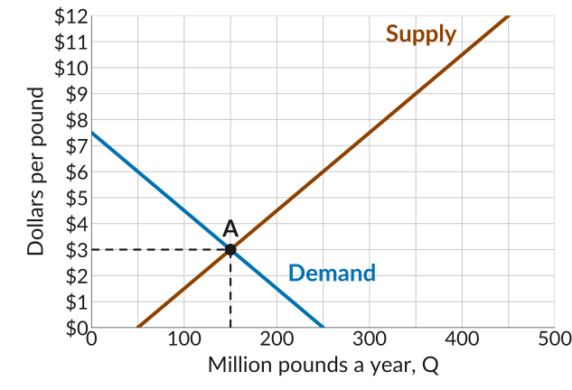
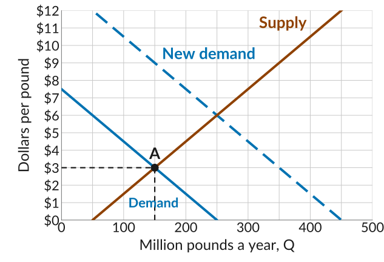
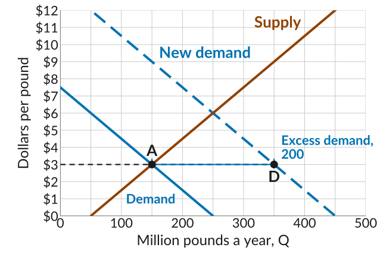
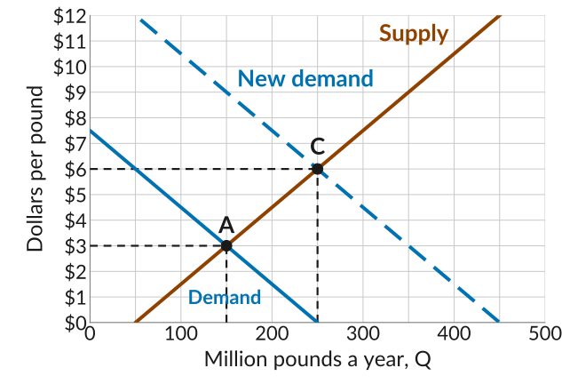
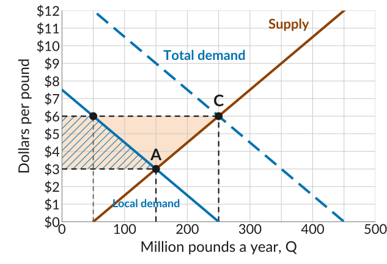
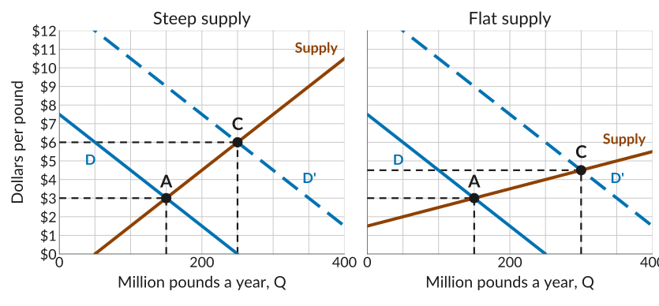
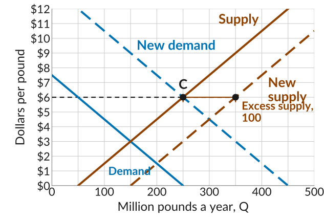
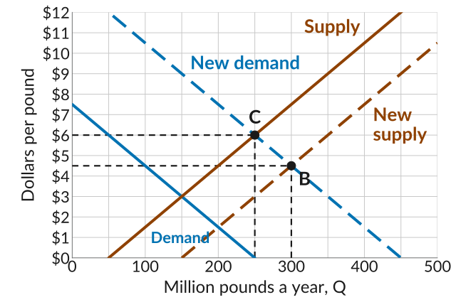

The Quinoa Boom:
Shifts in Supply and Demand
ECON 201: Principles of Microeconomics
Lecture 18
Div Bhagia
The Quinoa Boom

Source: FAOSTAT, producer prices and crop production for Peru and Bolivia.
What Happened
- Quinoa is a staple food grown on the Altiplano, high in the Andes of Peru and Bolivia.
- In the 2000s, as its nutritional properties became known, consumers in Europe and North America started buying it, leading to an increase in demand for quinoa.
- The price paid to farmers rose several times over and production more than doubled. After 2014 the price fell by more than half while output held up.
- Uneven gains at home: the staple food became expensive for poor consumers, while farmers, who are among the poorest, gained from the export sales.
Today: apply the supply and demand framework to understand the dynamics of this market.
Before the Boom
A stylized quinoa market: dollars per pound, million pounds a year.
- Demand is the buyers in Peru and Bolivia, lined up by willingness to pay.
- Supply is the marginal cost of each pound grown, lowest first.
- The market clears at A: 150 million pounds a year at $3 a pound.

Foreign Buyers Arrive
- In economics we think of such changes as exogenous shocks to the market: something changes outside the model, and we ask how the market responds.
- Here the shock is an increase in demand, which can be represented as a shift of the demand curve to the right.
- With foreign buyers, the total demand for quinoa is 250 million pounds more at each price.

Excess Demand at the Old Price
- At $3, buyers at home and abroad want 350 million pounds, but farmers grow 150.
- That is an excess demand of 200: buyers who cannot find quinoa at $3.
- Farmers and traders who see this can earn more by raising the price and growing more.

The New Equilibrium
- The market clears where the new demand curve meets supply, at C: 250 million pounds at $6.
- The extra pounds cost more to grow, so the price has to rise to bring them in.
- This explains the initial price rise and the increase in the quantity produced.

What an Increase in Demand Means
- Demand is higher at each possible price: a shift in the demand curve.
- In response, the equilibrium price changes. At the old price, sellers find they can sell more quinoa than before.
- Sellers respond to this price message by increasing the quantity supplied: a movement along the supply curve.
- The supply curve itself has not shifted: farmers’ marginal costs have not changed. The quantity supplied rose because the price changed.
How Does This Adjustment Really Happen?
- At $3 everyone was a price-taker, and no one knows the new equilibrium price is $6.
- A trader who sells out and turns buyers away realises some would pay more. She raises her price, becoming a price-maker for a while and earning a disequilibrium rent: profit above what keeps her in business.
- Others do the same, and farmers grow more, since quinoa now sells above marginal cost. The pushing stops at $6, where the market clears and everyone is a price-taker again.
- With excess supply it runs the other way: unsold stock piles up, a buyer offers less than the going price, a seller with full shelves takes it, and the price falls until the market clears.
Who Gained and Who Lost
- At $6, local buyers take 50 million pounds, read off the local demand curve, and the other 200 are exported.
- Farmers gain the orange strip: $3 more on every pound, and 100 million more pounds sold.
- Local buyers lose the hatched strip: $3 more on what they still buy, and most stop buying.

Gains and Losses at Home
- Farmers on the Altiplano are among the poorest people in Peru and Bolivia, and the boom raised their incomes.
- The urban poor who eat quinoa as a staple paid more, or went without.
- The diagram shows the gain is larger in dollars. It does not say whether that is fair: efficiency and fairness are different criteria.
When Supply Is Steep
The same surge in demand, with a steep and a flat supply curve through A.

Growing more quinoa on the Altiplano is costly, so supply is steep: the boom showed up mostly in the price and less in output.
More Land, More Farmers
- In the long run, high prices drew more land and more farmers into quinoa, so a shift in the supply curve.
- At $6, farmers would grow 350 million pounds, but buyers want 250: an excess supply of 100.
- Growers with unsold quinoa accept lower offers, and farmers whose costs exceed the lower price grow less, until the market clears.

The Price Comes Back Down
- The market clears where the new demand curve meets the new supply curve, at B: 300 million pounds at $4.50.
- Price falls and quantity rises. Demand did not shift: the quantity demanded rose from 250 to 300 because the price fell, a movement along the demand curve.
- This explains why quinoa prices stabilized again.

What to Do Next
- Quiz 7 is Monday, November 2, and covers Lectures 17 and 18.
- To prepare, go over the slides, worksheets, textbook readings (sections 8.5 and 8.6), and practice problems for both lectures.
ECON 201 · Lecture 18